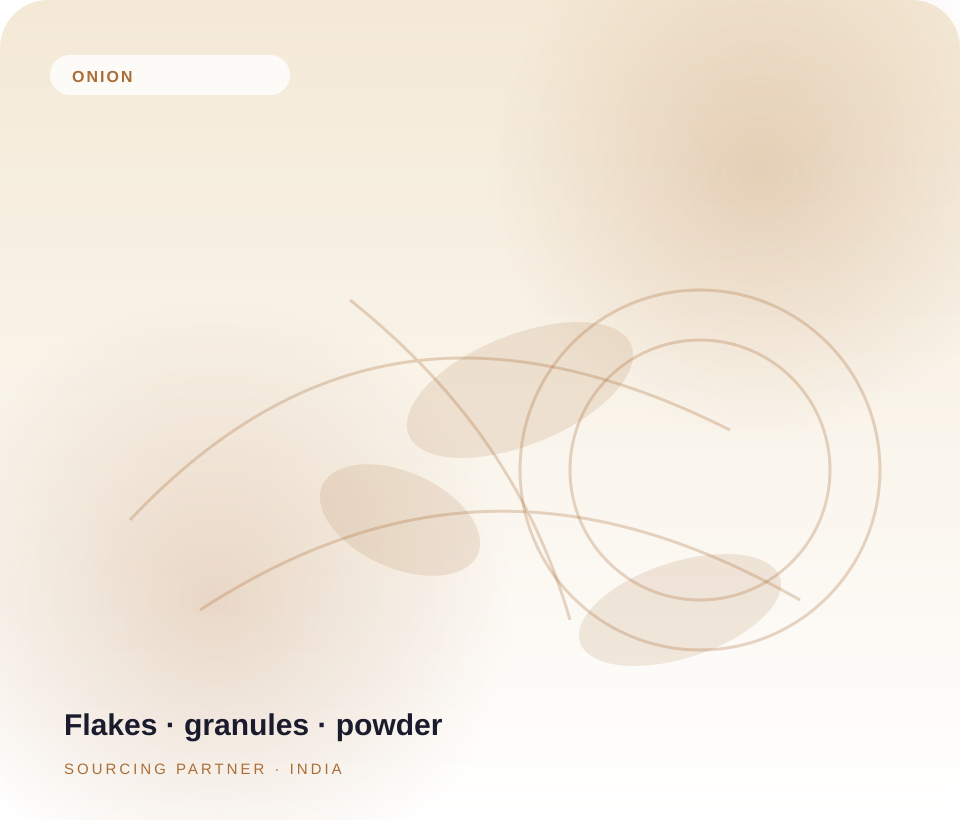
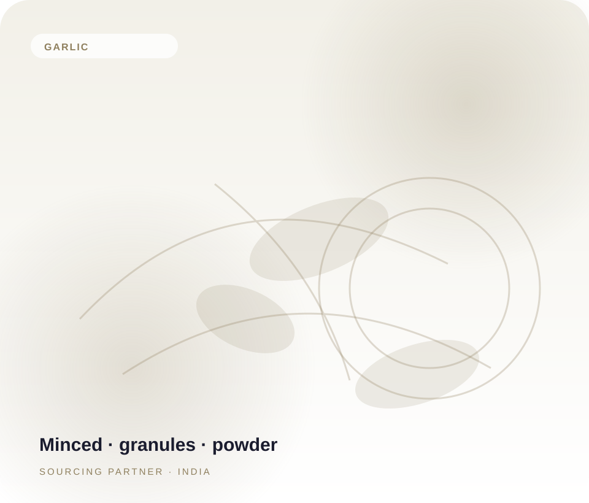
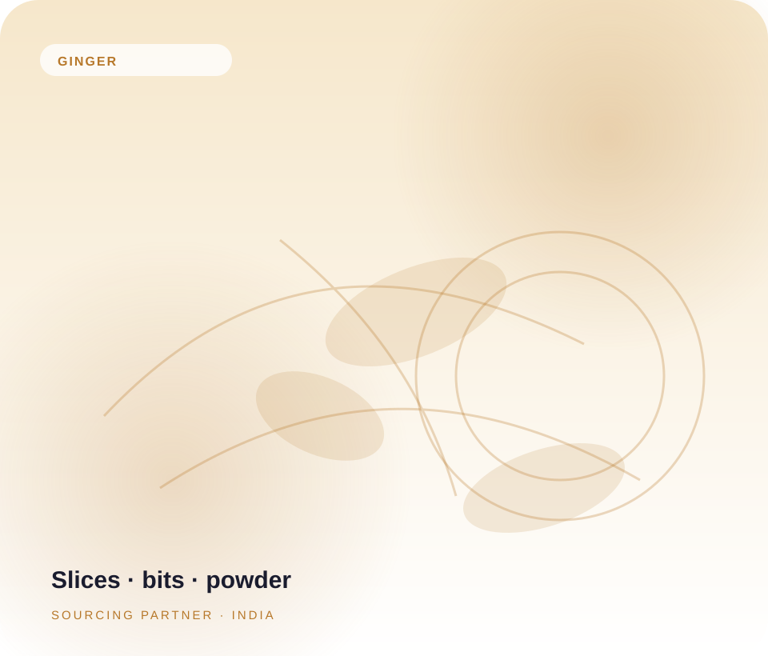
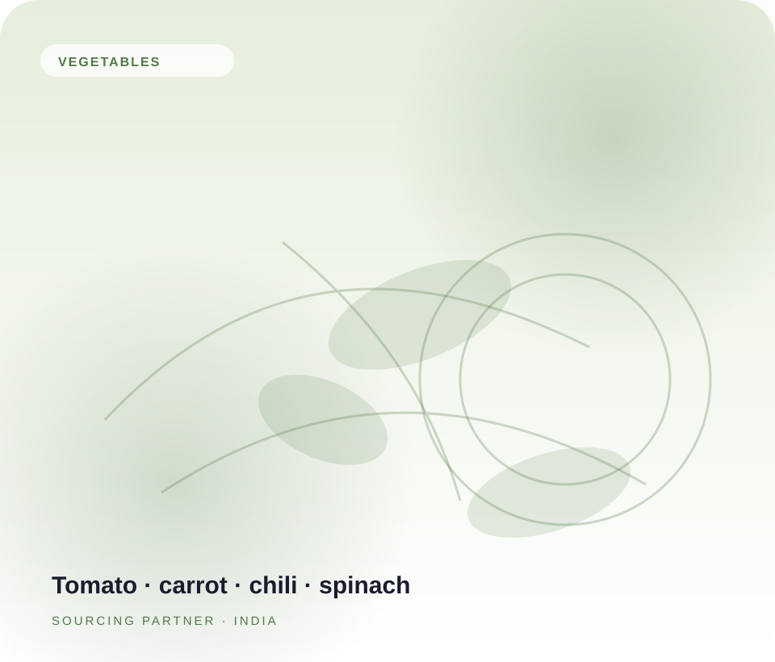
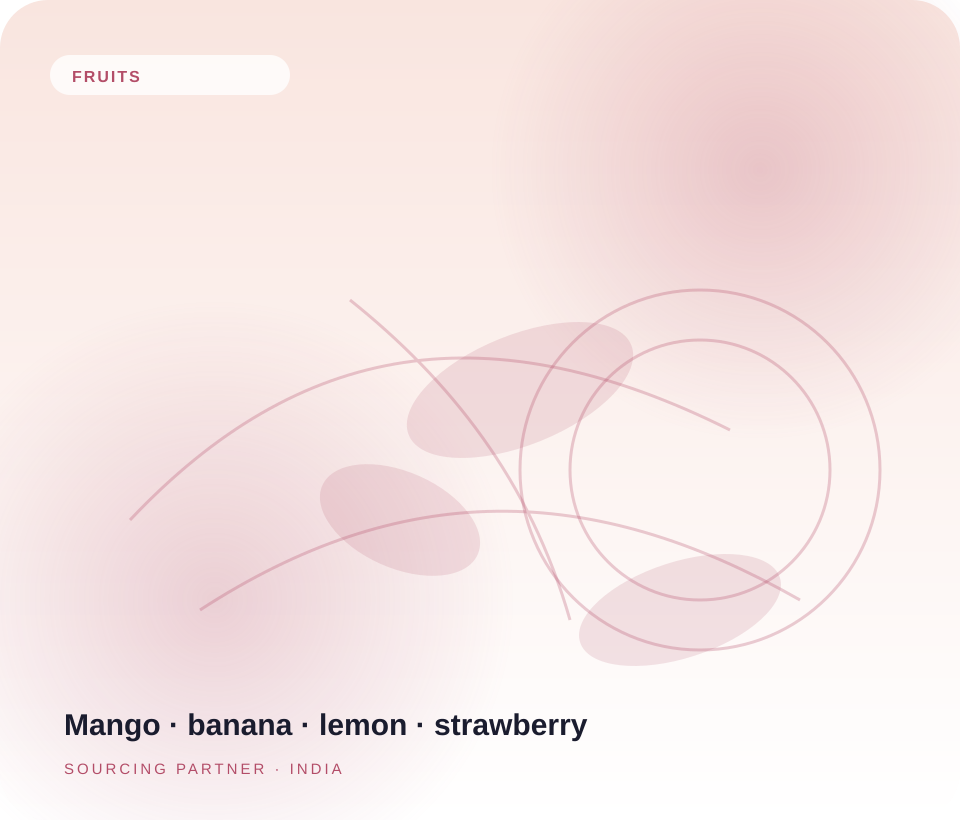

Importers & distributors
For teams building reliable ingredient supply across regional and international markets.
ZAPAX connects ingredient buyers with producing partners across India. We coordinate clear specifications, considered packaging and export-ready supply for a more confident sourcing experience.
We work with businesses that need dependable ingredient sourcing, clear product details and a responsive trade partner.
For teams building reliable ingredient supply across regional and international markets.
For blenders and brands looking for practical formats that fit their formulations.
For businesses exploring bulk or customized pack options through producing partners.
We listen to the brief, explore suitable product options with producing partners and coordinate the information buyers need to plan an order. ZAPAX is an export and sourcing partner, not a manufacturer.
See how we work ↗Connect the requirement with available partner options.
Clarify form, mesh, packing and document expectations.
Discuss shipment, destination and paperwork needs.
Review bulk and tailored pack options for the order.
Long-term trade begins with dependable communication, practical expectations and respect for every partner.
We begin with the application and requirements, then discuss relevant options.
We help clarify form, cut, mesh, documents and packaging details for review.
Destination, shipment planning and buyer communication stay part of the discussion.
Partner-led model: Production and processing take place with producing partners. Details are confirmed for each product and order.
Explore available categories and forms. Exact specifications and availability are confirmed against each buyer brief.


Cloves, minced, chopped, granules and powder through producing partners.
Inquire specifications ↗
Dried slices, crushed bits and powder options, subject to the product brief.
Inquire specifications ↗

Processing takes place with producing partners. ZAPAX coordinates product discussions, specification alignment and buyer-requested documentation.
Discuss process and available product details with the relevant producing partner.
Review requested physical, chemical and microbiological parameters for each order.
Clarify certificates and supporting documents required for the destination market.
Final options depend on product, destination, handling needs and agreement with the producing partner.
Poly-lined corrugated cartons. Common requested sizes include 10 kg, 20 kg and 25 kg, subject to product and agreement.
Aluminum foil vacuum bags may be discussed for suitable products and buyer requirements.
Customized stand-up pouches may be explored where product, labeling and order scope allow.
Illustrative sample testimonials for layout planning. These are fictional examples, not customer endorsements, and should be replaced with verified quotes before publication.
“The conversation around product forms and packing was clear from the beginning. It made our sourcing brief easier to organize.”
“It was helpful to have one point of contact to discuss availability, documentation needs and next steps for an export order.”
“The team listened to our specification and helped us structure the questions we needed to resolve before moving ahead.”
“Communication was thoughtful and practical. The discussion helped us understand which product details still needed confirmation.”
“We appreciated the focus on long-term value and clear expectations as we explored a potential supply relationship.”
Share the product, form, volume and destination. The ZAPAX team can coordinate available options with producing partners.
For verified email and business phone details, use the inquiry form while contact information is being finalized.
Open location in Google Maps ↗Start a sourcing conversation with ZAPAX and explore where a thoughtful partnership can take your business.
Start a conversation ↗